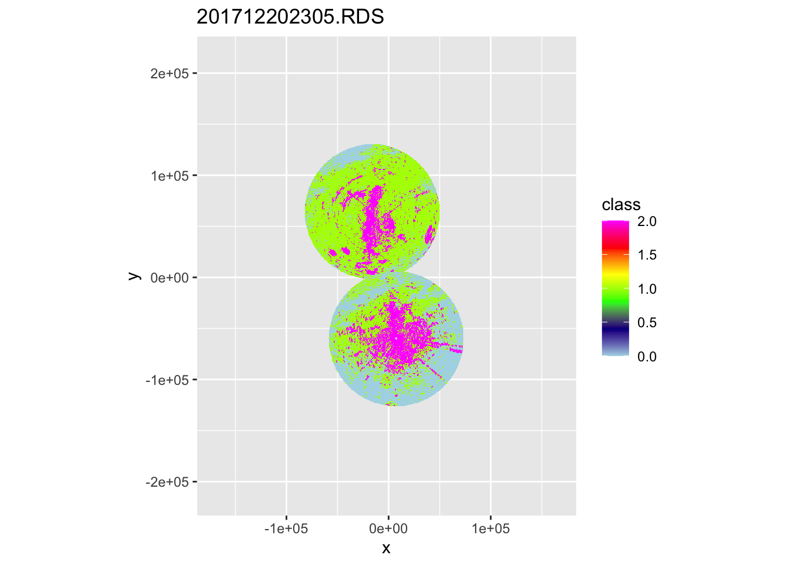
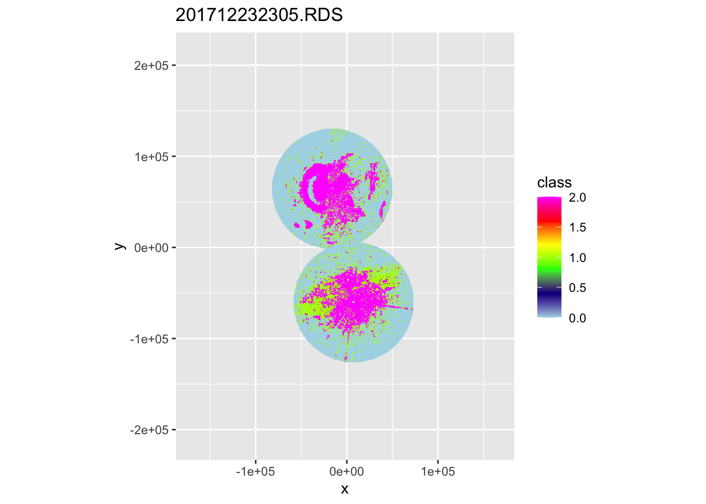
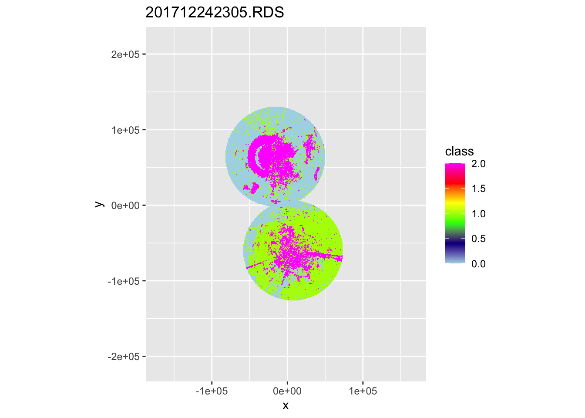
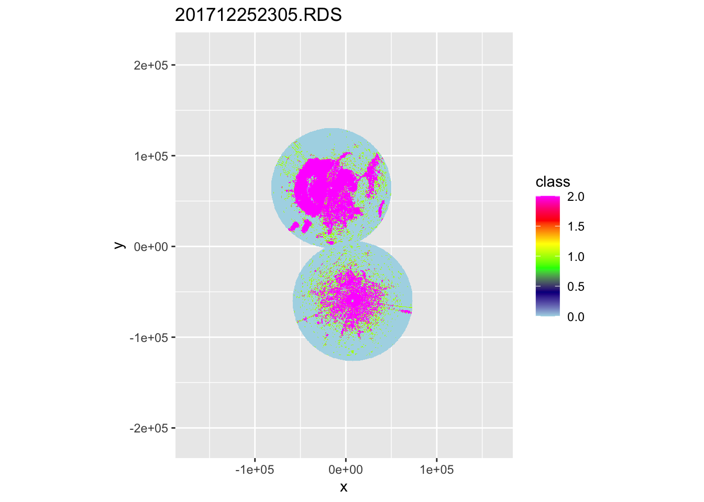
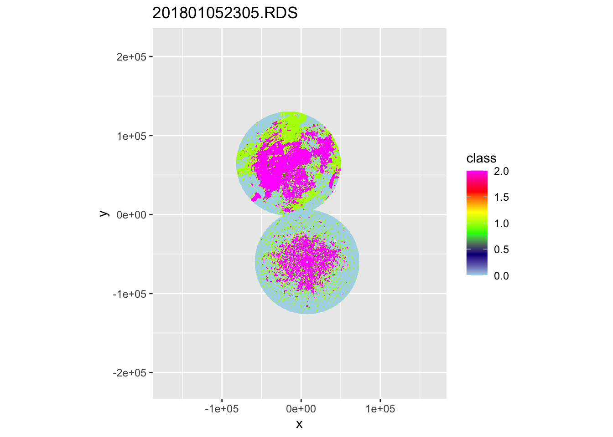
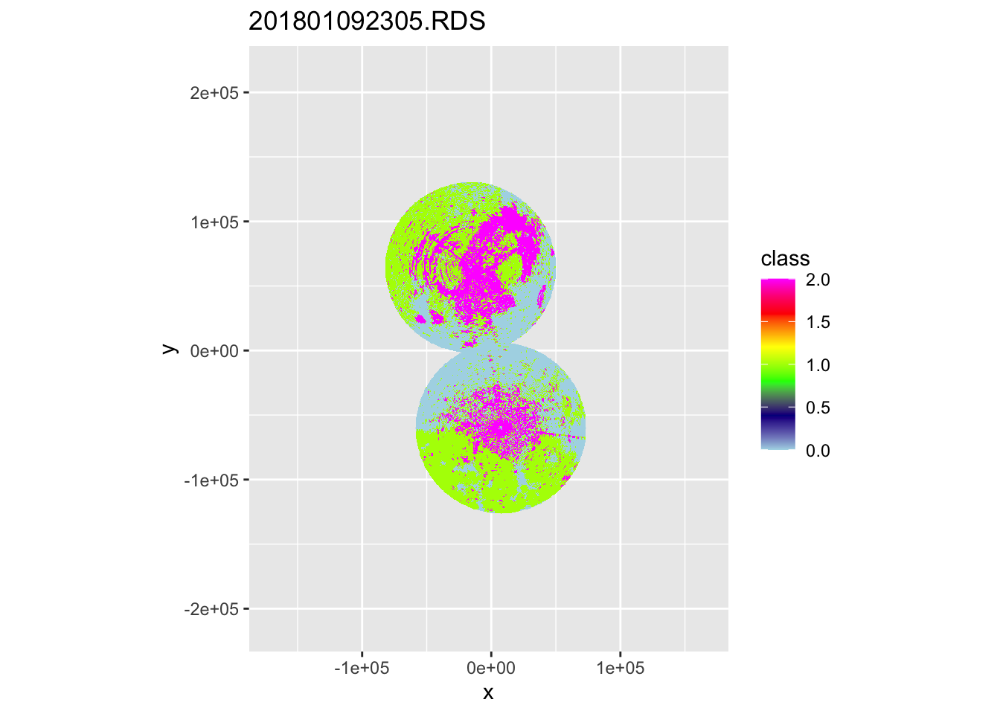
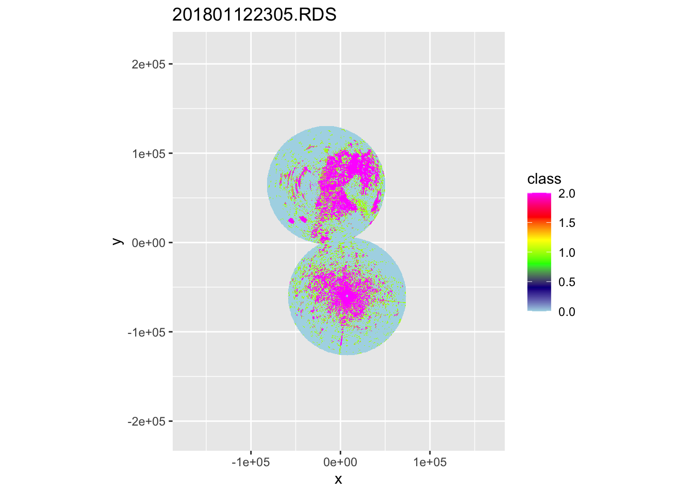
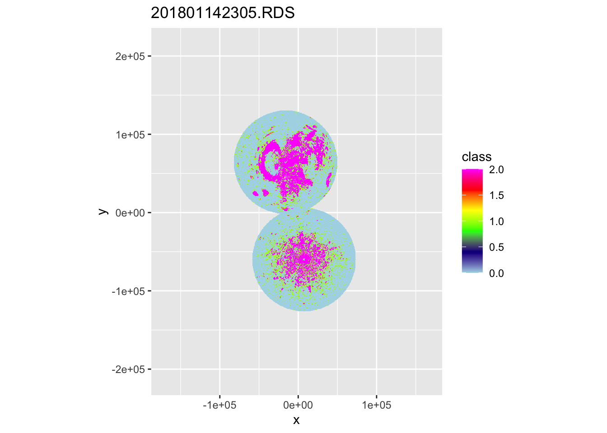
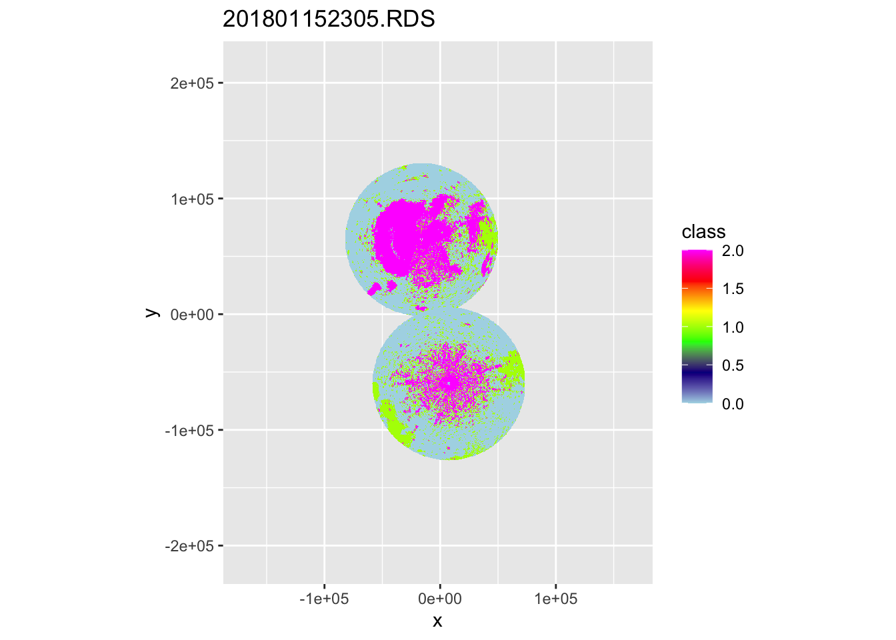

10 Determine baseline disturbance
To compare the disturbance caused by fireworks against the flight activity of normal nights, we select (mostly) rain-free nights from the baseline dataset.
We have previously calculated the classes targets using the depolarization ratio (Kilambi, Fabry, and Meunier 2018) and can now visualise them.
files <- Sys.glob(file.path("data/processed/composite-ppis-baseline/500m", "*"))
lapply(files, function(x) {
ppi <- readRDS(x)
plot(ppi, param = "class", zlim = c(0, 2)) + ggtitle(basename(x))
})## [[1]]
##
## [[2]]
##
## [[3]]
##
## [[4]]
##
## [[5]]
##
## [[6]]
##
## [[7]]
##
## [[8]]##
## [[9]]
##
## [[10]]
Through visual inspection we’ve determined the following PPIs to be sufficient to serve as a disturbance baseline. They may still contain forms of non-meteorological clutter, but that is not a problem as long as the clutter does not intersect with the count sites.
files_selected <- files[c(2, 4, 6, 7, 8)]Process the baseline PPIs the same way the disturbed PPIs are processed.
data_disturbance <- readRDS("data/models/data_cleaned.RDS")
data_baseline <- lapply(files_selected, function(x) {
df <- readRDS(x)[["data"]]@data
df["dt"] <- basename(tools::file_path_sans_ext(x))
df
})
clean_data_baseline <- function(data, max_distance, pixels) {
mdl_variables <- c("VIR", "dist_radar", "total_biomass", "total_crs",
"agricultural", "semiopen", "forests", "wetlands", "waterbodies", "urban",
"dist_urban", "human_pop", "pixel", "coverage", "class", "x", "y", "dt", "VIDc")
log10_variables <- c("dist_urban", "human_pop", "total_biomass", "dist_urban")
data %>%
dplyr::filter(pixel %in% pixels) %>%
mutate(VIR = replace_na(VIR, 0.1),
VIR = if_else(VIR == 0, 0.1, VIR),
VIR = log10(VIR),
VIDc = (10^VIR) / weighted_mean_crs,
VIDc = if_else(VIDc > 10000000, 1e-6, VIDc, 1e-6),
dt = as.factor(dt)) %>%
dplyr::select(all_of(mdl_variables)) %>%
filter_all(all_vars(is.finite(.))) %>%
rename(total_rcs = total_crs) %>%
identity() -> data_cleaned
data_cleaned
}
baseline_ppis <- lapply(data_baseline, function(x) clean_data_baseline(x, 66000, data_disturbance$pixel))
saveRDS(baseline_ppis, "data/processed/baseline_ppis.RDS")
baseline_response_VIR <- unlist(lapply(baseline_ppis, function(x) mean(x$VIR)))
baseline_response_VIDc <- unlist(lapply(baseline_ppis, function(x) mean(x$VIDc)))
br <- c("VIR" = mean(baseline_response_VIR), "VIDc" = mean(baseline_response_VIDc))
saveRDS(br, file = "data/processed/disturbance_baseline.RDS")
br## VIR VIDc
## -0.3654903 2.7240716